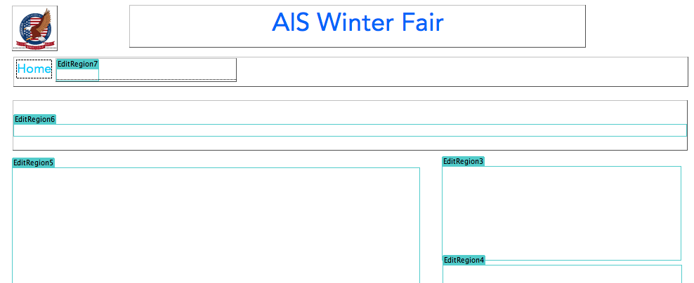
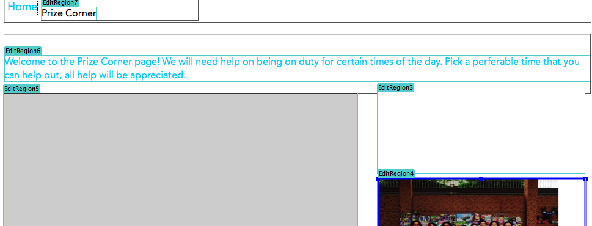

This site will require some subpages that look the same. How will we manage that?
First, a template has to be made so that it makes creating the subpages much easier as each subpage has some qualities that remain the same.
I created a template page on Dream Weaver.
Then, I moved on to making the subpages.
I edited the editable regions by adding the signup sheet on it and the picures.
After that, I will need to create the subpages using the template. However, there is now an issue because I need to insert the Google Spreadsheet onto the page, but I DON'T KNOW HOW!
After some research, I found that using the i frame tag and publishing the document will help me embed the document onto the page.
I had a look at my website and tried using it as my audience.